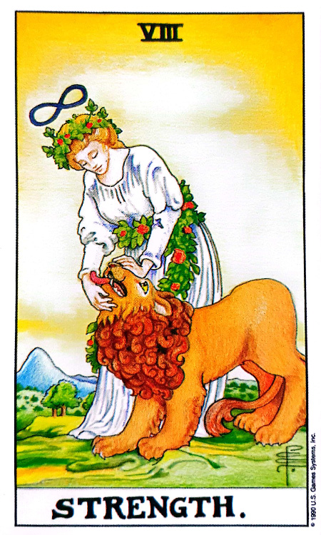
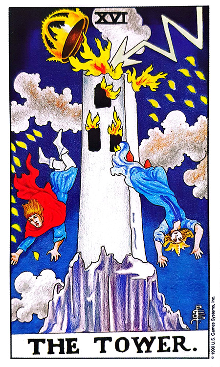

![황토색 Ocher 카드]()
REDSUN COLOR TAROT · STUDY NOTES
쉽고 재미있는 레드썬의 컬러타로 — 챕터 15 (215~222쪽)
“ 평안한 안정감 ”(책 형광펜 — 표어 “평안한 안정감”의 ‘안정감’에 노란 형광펜. 215쪽 표어 아래 붉은 손글씨: “황토 : 콩 심은 데 콩 나고, 팥 심은 데 팥 난다 / 자신에게는 다른 색의 힘을 뺏는다”, 키워드 옆 손글씨: “★그때그때 유리한 쪽으로 대처”(‘유리한 쪽으로 대처’ 부분에 푸른 볼펜 두 줄 밑줄), “★상황에 따른 유동성 / ★시간이 걸림 / ★결과가 한정적”)
이 챕터의 표어는 “평안한 안정감”입니다. Ocher는 땅의 색·황토로서 인간에게 가장 근원적인 편안함과 안정감을 주는 흙 색소입니다. “콩 심은 데 콩 나고, 팥 심은 데 팥 난다”는 손글씨 메모가 이 컬러의 핵심을 정확히 요약합니다.
황토는 선사 시대 사람들이 만든 동굴 벽화와 암각화의 안료로 사용되었습니다. 이 색으로 일상생활·동물·상징적 표현의 장면을 묘사했습니다. 황토는 역사적으로 다양한 사회에서 예술적·문화적·실용적인 목적으로 사용되어 온 다재다능하고 역사적으로 중요한 흙 색소입니다.
땅은 언제나 우리 곁에 존재합니다. 인간이 있는 곳에 어디든지 땅이 있기에 인간에게 편안함과 안정감을 줍니다. 땅 위에 집을 짓고, 땅 위를 걸어 다니며, 땅 위에 농작물을 심었습니다.
조선조 왕실에서 내관(內官)으로 평생 동안 일한 이재우(李載祐, 1884~1963) 상청(尙廳)으로부터 왕실에서 실제로 시행되었던 식사법과 치병술을 통한 양생법을 담고 있는 왕실양생술(王室養生術)에 따르면, 뒷날 세상 사람들을 구하는 데 황토가 큰 힘을 발휘할 것이라고 예언하고 있습니다.
새로운 온천을 개발하여 눈병 등을 치료했고, 세조는 왕과 왕자들이 피로할 때 쉴 수 있도록 3평 정도의 황토방을 궁내에 만들어 피로 회복실로 사용했다고 합니다.
인간에게 이로운 미생물이 살아있어 예로부터 황토를 ‘살아 있는 생명체’라 불러왔는데, 황토에는 동식물의 성장에 꼭 필요한 ‘원적외선’을 다량 뿜어내고 있습니다.
음양 사상은 동양 문화에서 상당히 중요한 덕목인데, 예로부터 “사람은 하늘의 기운과 땅의 기운을 받아서 살아간다”고 했습니다. 양의 기운을 가진 하늘과 음의 기운을 가진 땅이 조화와 균형을 이루어야 한다는 것입니다.
황토로 지은 집은 황토 속의 원적외선이 몸 속에 침투하여 열을 만들고, 이 열은 우리 몸의 문제를 일으키는 세균을 제거하고 혈관을 확장시켜 혈액순환과 세포 생성에 도움을 주어 세포 성장을 활성화시켜 인간을 이롭게 합니다.
하지만 1970년대 새마을 운동의 일환으로 경제개발 계획을 추진하면서 고층주택과 사무용 빌딩을 짓기 위해 흙집은 사라지고, 철근과 콘크리트를 이용한 주택이나 건물이 주류를 이루게 됩니다. 하지만 경제가 어느 정도 안정되면서 다시 건강이 화두로 떠올랐고, 황토는 가장 친환경적인 요소로서 주목받기 시작했습니다.
사우나의 황토방은 언제나 인기인데, 황토방에 들어가 땀을 흘리고 나면 개운함을 느낄 수 있습니다. 황토는 입자가 곱고 산소를 많이 함유하고 있으며, 황토가 뿜어내는 원적외선은 열을 만들어 혈액순환과 세포 성장을 활성화시키고 신진대사를 돕기 때문에:
어머니의 푸근함에 비유되는 땅은 만물을 소생케 하는 근원이고, 기름진 땅과 비옥한 곡식은 풍요의 상징이기도 합니다. 비옥함을 상징하는 벼와 밀은 이 색입니다.
땅이 있어야 집을 짓고 편안한 생활을 할 수 있으며, 땅이 있어야 농작물을 심고 수확을 통하여 경제적 안정을 취할 수 있습니다.
땅을 많이 소유하고 있는 사람을 부호라고 표현하기도 하는데, 부호는 재산이 넉넉하고 세력이 있는 사람을 뜻합니다. 땅은 언제나 인간에게 소유욕의 대상이었는데, 전쟁도 어찌 보면 땅을 차지하기 위한 싸움이라 할 수 있습니다.
Ocher색은 상황에 맞게 가장 빠르게 대처하고 적응하는 유동성이 있는 색입니다.
황토의 색은 계절마다 다릅니다:
빠르게 적응하고 안정적으로 수확을 거둬들이지만, 그 수확량에는 한계가 있는 색이기도 합니다. 즉 쉽게 이루어지고 쉽게 결과물이 나오지만 결과의 크기는 한정적입니다.
| # | 성격 특징 |
|---|---|
| 1 | 편안하고 부드러운 이미지입니다. |
| 2 | 보수적이고 은근히 고집이 셉니다. |
| 3 | 환경에 따라 대처할 수 있는 적응력이 좋습니다. |
| 4 | 믿음직스러우며 끈기가 있습니다. |
| 5 | 겸손하고 중후한 타입입니다. |
| 6 | 말과 행동 모두 조심스럽습니다. |
| 7 | 신용을 중요하게 생각하고 중용을 지킵니다. |
| 8 | 튀지 않으며 맡은 일을 꾸준하게 처리해 갑니다. |
| 9 | 모나지 않고 포용력이 있습니다. |
| 10 | 자칫 너무 넓은 마음으로 주변 상황에 쉽게 좌우될 수 있습니다. |
| 11 | 다소 게으른 편이며 풍채가 좋습니다. |
“평안한 안정감” — 편안·부드러움·믿음직·끈기·겸손·중후·신용·중용·포용력의 어른스러운 면과, 은근한 고집·주변에 좌우됨·게으름의 그늘진 면이 함께 존재합니다. 튀지 않고 꾸준하게가 핵심.
| 카드 조합 | 핵심 한 줄 | 상세 해석 |
|---|---|---|
 VIII STRENGTH (힘) + Ocher |
어려움 해결 · 안정적 만남 | 연애운에서 지금과 같이 나왔다면 현재 연애를 하는 데 있어서 경제적으로 힘든 부분이 있거나 서로 성격상에 차이로 인해 어려움이 있지만, 힘든 부분은 곧 해결될 것이며 안정적인 만남을 하게 될 것입니다. 소유욕이나 집착으로 힘들어할 수도 있습니다. “애인을 만날 수 있을까요?” 질문이라면 지금 연애를 하기에 좋은 상황은 아니지만 머지않아 좋은 사람을 만나게 될 것입니다. |
 XVI THE TOWER (탑) + Ocher |
이별수 · 쉽게 깨진다 | (220쪽 붉은 손글씨: “이별수(깨진다) 쉽게 깨진다”) 생각지 못한 문제가 갑자기 발생하여 헤어질 수 있습니다. 나의 욕심과 집착으로 인해 쉽게 만나고 쉽게 헤어질 가능성이 있습니다. “애인을 만날 수 있을까요?” 질문의 솔로 연애운이라면 당분간은 만나지 않는 것이 좋겠습니다. 지금 만나는 사람은 나를 힘들게 할 것이고 나의 이미지만 안 좋아질 뿐입니다. |
Ocher는 그때그때 대처가 잘 이뤄지고 쉽게 결과가 나오지만, 그 결과는 한정적입니다. (221쪽 형광펜 + 밑줄 필기: “적은 결과물”)
| 카드 조합 | 핵심 한 줄 | 상세 해석 |
|---|---|---|
| 긍정 타로 + Ocher | 안정 · 큰돈 아님 | 긍정적인 유니버셜 웨이트 타로와 나온다면 큰돈을 벌지는 않지만, 안정적이며 큰 어려움이 없습니다. |
| 부정 타로 + Ocher | 오히려 안정감 없음 | 부정적인 유니버셜 웨이트 타로와 나온다면 오히려 안정감이 없는 것으로서 경제적인 어려움을 나타낼 수 있습니다. |
| Ocher (핵심 포인트) |
빌려준 돈·부동산 | 빌려준 돈이 있다면 곧 받게 될 것입니다. 부동산과 관련된 금전운이 있을 수 있습니다. |
| 카드 조합 | 핵심 한 줄 | 상세 해석 |
|---|---|---|
| 긍정 타로 + Ocher (매매운) |
안정적 가격에 매매 | 긍정적인 유니버셜 웨이트 타로와 나온다면 큰 이득은 아니지만 손해는 보지 않으며 안정적인 가격에 매매가 이뤄질 것입니다. |
| 부정 타로 + Ocher (매매운) |
만족스러운 가격 어려움 | 부정적인 유니버셜 웨이트 타로와 나온다면 만족스러운 가격에는 매매가 이루어지기 힘듭니다. |
| 유니 타로 + Ocher (합격운) |
동반 타로가 결정 | 합격운이라면 Ocher 색만 놓고 본다면 긍정의 의미가 강하지만, 유니버셜 웨이트 타로와 같이 사용할 경우 유니버셜 웨이트 타로의 긍정·부정 유무가 합격·불합격에 큰 영향을 끼치기 때문에 유니버셜 웨이트 타로의 긍정·부정 유무를 파악하는 게 필요합니다. |
Ocher의 사업은 대규모의 큰 사업이기보다는 동네 음식점이나 슈퍼와 같은 작은 규모의 사업입니다. Ocher는 같이 보는 유니버셜 웨이트 타로의 긍정·부정 유무를 통해 사업의 안정성을 평가할 수 있습니다. Ocher 색만 놓고 본다면 긍정의 뜻이 강합니다.
이 색은 작은 규모의 자영업이나 건설·부동산·땅과 연관된 직업이 어울립니다.
| 항목 | 내용 |
|---|---|
| 기본 원칙 | 기본적으로는 건강한 컬러입니다. |
| 주의 질환 리스트 | 대장 질환 · 독에 의한 감염 |
| # | 룰 | 내용 |
|---|---|---|
| 1 | 유동성 + 한정적 결과 | 계절마다 다른 땅처럼 빠르게 대처 · 쉽게 이루어지나 결과의 크기는 한정적. |
| 2 | “콩 심은 데 콩 난다” | 원리원칙·경험대로 결과가 나옴 · 큰 대박은 없지만 큰 손실도 없음. |
| 3 | 부동산·짝의 컬러 | 키워드 커플·짝·계약·부동산·부호 · 금전은 빌려준 돈 회수·부동산 관련. |
| 4 | 동반 타로의 영향 | 매매·합격은 유니버셜 타로 긍정/부정에 큰 영향 · 사업도 마찬가지. |
| 5 | 연애 이중성 | 힘+O=어려움 해결·안정 만남 / 탑+O=이별수·쉽게 깨진다(220쪽 필기). |
| 섹션 | 핵심 명제 |
|---|---|
| 기본 | “평안한 안정감” · 키워드 22 — 법·원리원칙·실용·안정감·편안함·끈기·부·권위·신용·계약·커플·짝·농경. |
| 안정감·편안함 | 선사시대 동굴 벽화 안료 · 땅은 인간이 있는 곳 어디든 존재 → 편안함·안정감. |
| 다재다능 | 왕실양생술 이재우 상청 · 세조의 3평 황토방(피로 회복실) · ‘살아 있는 생명체’·원적외선 다량 · 황토옹기 발효 · 자궁암·유방암 없던 옛 여인·복어독·화상·곤충 차단. |
| 음양의 조화 | 하늘=양, 땅=음 · 원적외선이 세균 제거·혈액순환·세포 성장 · 1970 새마을 → 콘크리트 → 다시 친환경 황토 부활 · 사우나 황토방(불면증·피로회복·노화 지체). |
| 비옥함 | 어머니의 푸근함 · 벼·밀의 색 · 부호(富豪) = 땅 많이 소유 · 전쟁도 땅 싸움. |
| 빠른 전환 | 계절마다 다른 땅(봄 새싹·여름 푸르름·가을 수확·겨울 눈) · 쉽게 이루어지지만 결과 크기는 한정적. |
| 성격 | 편안·부드러움·믿음직·끈기·겸손·중후·신용·중용·포용 vs 은근한 고집·주변에 좌우·다소 게으름·풍채. |
| 연애 | 힘+O=경제·성격 차이 있으나 곧 해결·안정 / 탑+O=이별수·쉽게 깨진다·솔로는 당분간 안 만나는 게 좋음. |
| 금전·매매·합격 | 긍정+O=안정(큰돈 X) / 부정+O=오히려 어려움 / 빌려준 돈 곧 회수·부동산 / 매매=안정 가격 or 만족 어려움 / 합격=유니 타로가 결정. |
| 사업·진로·건강 | 사업=동네 음식점·슈퍼 같은 작은 규모 · 진로=건설·토목·부동산·농업·인테리어·바이오 / 건강=대장질환·독에 의한 감염. |